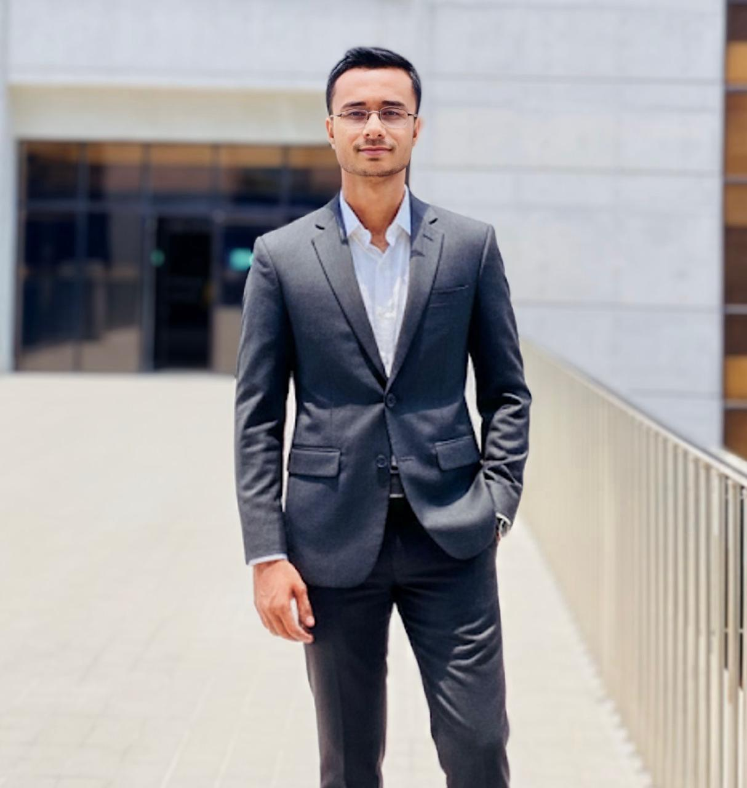

Typeset in IEEE conference format · Built with plain HTML, CSS and JavaScript.
Typeset in IEEE conference format · Built with plain HTML, CSS and JavaScript.
Abstract-This document presents the academic and research work of Md. Musfiqur Rahman Akib, a Computer Science and Engineering undergraduate at Chittagong Independent University (CIU), Chattogram, Bangladesh. His work is centred on machine learning and deep learning, applied across disciplines: first to healthcare, through diagnosis from medical images, electrocardiograms and clinical records, and more recently to renewable energy and power electronics, including selective harmonic elimination in multilevel inverters. Thirteen peer-reviewed papers are reported: a journal article accepted in Energies (MDPI), seven published conference papers (four as first author), and five more presented at IEEE and international conferences in 2025 and 2026. Alongside research, he builds web and mobile software that turns models and data into tools people can use. The record also includes a first runner-up finish at NASA Space Apps Challenge (Chattogram, 2023) and leadership as Chair of the IEEE CIU Student Branch.
Index Terms-machine learning, deep learning, computer vision, explainable artificial intelligence, model compression, medical image analysis, biomedical signal processing, renewable energy, power electronics, selective harmonic elimination.
I am a Computer Science and Engineering undergraduate at Chittagong Independent University (CIU), Bangladesh. My main field is artificial intelligence, specifically machine learning and deep learning, and I use it to solve practical problems in other disciplines.
My early research was in healthcare: diagnosing liver fibrosis, kidney disease, heart disease and lung cancer from medical images and clinical records, with a focus on models that are small enough to deploy and clear enough to explain. My recent work has moved to renewable energy and power electronics, where I apply the same learning methods to problems such as selective harmonic elimination in multilevel inverters and solar energy estimation. This has made my work multidisciplinary: the methods come from computer science, the problems from medicine and electrical engineering.
Alongside research, I build software. KrishiBondhu, a crop-advisory app for farmers, and Solar Spectra, a rooftop solar estimator for Chattogram, turn models and data into tools people can use (Section IV).
Section II summarises academic background. Section III presents the publication record in detail. Section IV describes engineering projects, Section V competitive achievements and Section VI extracurricular activity. Section VII tabulates technical skills and Section VIII concludes. Full bibliographic records appear in the reference list; every citation marker links to its entry.
Thirteen peer-reviewed papers are reported here: seven published in conference proceedings between 2025 and 2026, four of them as first author; one journal article accepted in Energies (MDPI); and five further papers presented at IEEE and international conferences whose proceedings are still forthcoming. Table I summarises the record. Published titles link to the paper, as does each entry in the reference list, and papers in Scopus-indexed proceedings are marked accordingly.
| Ref. | Venue and location | Year | Author position | Indexing |
|---|---|---|---|---|
| [1] | ICIPCN, Dhulikhel, Nepal | 2026 | 1st | Scopus |
| [2] | ICCIT, Cox's Bazar, Bangladesh | 2025 | 1st | Scopus |
| [3] | ICCIT, Cox's Bazar, Bangladesh | 2025 | 1st | Scopus |
| [4] | IDAA, Dhaka, Bangladesh | 2025 | 1st | Scopus |
| [5] | ICIPCN, Dhulikhel, Nepal | 2026 | 3rd | Scopus |
| [6] | ICIPCN, Dhulikhel, Nepal | 2026 | 3rd | Scopus |
| [7] | ICPSDT, CUET, Chattogram | 2025 | 2nd | Open access |
| [8] | Energies (MDPI), journal | 2026 | 2nd | Accepted |
| [9] | IEEE BECITHCON, Dhaka, Bangladesh | 2026 | 2nd | Presented |
| [10] | IEEE RAAICON, Jashore, Bangladesh | 2026 | 2nd | Presented |
| [11] | IEEE RAAICON, Jashore, Bangladesh | 2026 | 2nd | Presented |
| [12] | ICCVBIC, Lalitpur, Nepal | 2026 | Presenter | Presented |
| [13] | IEEE ICBDS, Kolhapur, India | 2025 | Co-author | Presented |
M. M. R. Akib, H. Rahaman, R. Akter
2026 6th Int. Conf. on Image Processing and Capsule Networks (ICIPCN), Dhulikhel, Nepal, 2026, pp. 84–89. [1]
To our knowledge the first application of knowledge distillation to liver fibrosis staging (F0–F4) from ultrasound. A high-capacity ResNet-50 teacher is distilled into MobileNetV3-Small, ResNet-18 and EfficientNet-B0 students small enough for bedside inference. A leak-safe split groups images by file stem so that near-duplicate frames cannot straddle the training and validation partitions, a common and rarely acknowledged source of optimistic bias. On a 6,323-image dataset the best student reaches 98.19% accuracy with 4.01M parameters and roughly 1.87 ms per image, retaining teacher-level discrimination at a fraction of the cost.
@inproceedings{akib2026fibrolitekd,
author = {Akib, Md. Musfiqur Rahman and Rahaman, Habibur and Akter, Rosni},
title = {{FibroLiteKD}: A Novel Leak-Safe Knowledge Distillation Framework
for Compact Ultrasound-based Liver Fibrosis Staging},
booktitle = {2026 6th International Conference on Image Processing and
Capsule Networks (ICIPCN)},
address = {Dhulikhel, Nepal},
pages = {84--89},
year = {2026},
publisher = {IEEE},
doi = {10.1109/ICIPCN67432.2026.11438428}
}
An Enhanced Random Forest Model for Predicting Serum Creatinine in Chronic Kidney Disease Scopus
M. M. R. Akib, H. Rahaman, A. D. Niloy
2025 28th Int. Conf. on Computer and Information Technology (ICCIT), Cox's Bazar, Bangladesh, 2025, pp. 1882–1887. [2]
Chronic kidney disease is usually caught late, which narrows the treatment options that remain. This paper builds an interpretable regression framework that estimates serum creatinine from routinely collected clinical variables, so that risk can be assessed earlier in laboratory-constrained settings without ordering extra tests. Two public datasets were merged and several regressors compared; Random Forest fitted best (RMSE 0.126, R² 0.98), clearly ahead of XGBoost and a Bayesian neural network. Haemoglobin, systolic blood pressure, fasting blood glucose and age emerged as the dominant predictors, keeping the model clinically legible rather than a black box.
@inproceedings{akib2025creatinine,
author = {Akib, Md. Musfiqur Rahman and Rahaman, Habibur and Niloy, Augusto Dip},
title = {An Enhanced Random Forest Model for Predicting Serum Creatinine
in Chronic Kidney Disease},
booktitle = {2025 28th International Conference on Computer and
Information Technology (ICCIT)},
address = {Cox's Bazar, Bangladesh},
pages = {1882--1887},
year = {2025},
publisher = {IEEE},
doi = {10.1109/ICCIT68739.2025.11490451}
}
M. M. R. Akib, H. Rahaman, S. Abedin
2025 28th Int. Conf. on Computer and Information Technology (ICCIT), Cox's Bazar, Bangladesh, 2025, pp. 425–430. [3]
An applied study of the community-level business capacity that Bangladesh's tourism sector leaves unused, local guiding, home-cooked food services and vehicle rental. Empirical analysis identifies fragmented, unlinked service provision as the principal barrier to market scalability: the supply exists, but tourists cannot find or trust it. The paper proposes a centralised digital platform prototype that connects travellers to verified local providers through consolidated booking and trust-based incentives, and reports preliminary gains in service discoverability, operational efficiency and grassroots economic participation.
@inproceedings{akib2025tourism,
author = {Akib, Md. Musfiqur Rahman and Rahaman, Habibur and Abedin, Sadman},
title = {A Practical Framework to Unlock Business and Employment
Opportunities for Local Communities in Bangladesh's Tourism Sector},
booktitle = {2025 28th International Conference on Computer and
Information Technology (ICCIT)},
address = {Cox's Bazar, Bangladesh},
pages = {425--430},
year = {2025},
publisher = {IEEE},
doi = {10.1109/ICCIT68739.2025.11491495}
}
M. M. R. Akib, H. Rahaman, R. Akter, P. Paul
Proc. Int. Conf. on Intelligent Data Analysis and Applications (IDAA 2025), Dhaka, Bangladesh, 12–13 Dec. 2025. Advances in Intelligent Systems Research, Atlantis Press, 2026, pp. 221–234. [4]
Cross-domain knowledge distillation for chronic kidney disease staging, transferring learned behaviour from tree-based ensemble teachers into neural student architectures, an unusual transfer direction, since the two model families share no common representation space. An adaptive computational optimisation component fits the student to the compute budget available at deployment. The work extends the chronic kidney disease line from single-value creatinine regression toward full multi-stage staging. (Description drawn from the title; replace with the abstract once convenient.)
@incollection{akib2026ckdxnet,
author = {Akib, Md. Musfiqur Rahman and Rahaman, Habibur and
Akter, Rosni and Paul, Pial},
title = {{CKDX-Net}: A Novel Cross-Domain Knowledge Distillation Framework
from Tree-Based to Neural Architectures for Chronic Kidney Disease
Staging with Adaptive Computational Optimization},
booktitle = {Proceedings of the International Conference on Intelligent Data
Analysis and Applications (IDAA 2025)},
series = {Advances in Intelligent Systems Research},
address = {Dhaka, Bangladesh},
pages = {221--234},
year = {2026},
publisher = {Atlantis Press International BV},
doi = {10.2991/978-94-6239-664-7_17}
}
P. Paul, R. Akter, M. M. R. Akib, H. Rahaman
2026 6th Int. Conf. on Image Processing and Capsule Networks (ICIPCN), Dhulikhel, Nepal, 2026, pp. 90–96. [5]
Coronary artery disease is the leading cause of death worldwide, yet the diagnostic pathway remains invasive and resource-intensive. The paper distils a CatBoost teacher into a lightweight neural student, reaching 90% accuracy and 0.95 AUC while keeping the prediction explainable through SHAP attribution, so the model reports not only a risk score but the factors that produced it.
@inproceedings{paul2026netexcad,
author = {Paul, Pial and Akter, Rosni and Akib, Md. Musfiqur Rahman and
Rahaman, Habibur},
title = {{NETex-CAD}: A Novel Neural Essence Transfer Explainable Framework
via Knowledge Distillation for Lightweight Coronary Artery
Disease Prediction},
booktitle = {2026 6th International Conference on Image Processing and
Capsule Networks (ICIPCN)},
address = {Dhulikhel, Nepal},
pages = {90--96},
year = {2026},
publisher = {IEEE},
doi = {10.1109/ICIPCN67432.2026.11438303}
}
T. S. Sinan, H. Rahaman, M. M. R. Akib
2026 6th Int. Conf. on Image Processing and Capsule Networks (ICIPCN), Dhulikhel, Nepal, 2026, pp. 70–77. [6]
A deep Xception teacher is distilled into a lightweight CNN student for four-class histological classification of lung cancer from CT imaging, reaching 99.51% accuracy while cutting inference time by 47.3% relative to the teacher. A hybrid loss combining KL divergence, categorical cross-entropy and mean squared error maximises transfer efficiency. The trained model is delivered through a Django web application, so prediction is usable in both urban clinical and resource-limited remote settings.
@inproceedings{sinan2026lungscankd,
author = {Sinan, Tanveer Saad and Rahaman, Habibur and
Akib, Md. Musfiqur Rahman},
title = {{LungScan-KD}: An Energy-Efficient Distilled Deep Learning Model
for Web-based Lung Cancer Diagnosis using CT Imaging},
booktitle = {2026 6th International Conference on Image Processing and
Capsule Networks (ICIPCN)},
address = {Dhulikhel, Nepal},
pages = {70--77},
year = {2026},
publisher = {IEEE},
doi = {10.1109/ICIPCN67432.2026.11439042}
}
H. Rahaman, M. M. R. Akib, P. Paul, R. Akter
6th Int. Conf. on Physics for Sustainable Development and Technology (ICPSDT 2025), CUET, Chattogram, Bangladesh, 19–20 Oct. 2025. Open access, CC BY 4.0. [7]
A bio-physics inspired approach to early serum creatinine prediction for chronic kidney disease assessment, emphasising interpretability so that predictions can be reasoned about clinically rather than accepted on trust. Presented at ICPSDT 2025 at CUET and openly archived on Zenodo. (Description drawn from the title; replace with the abstract once convenient.)
@inproceedings{rahaman2025interpretable,
author = {Rahaman, Habibur and Akib, Md. Musfiqur Rahman and
Paul, Pial and Akter, Rosni},
title = {Interpretable Machine Learning for Early Serum Creatinine
Prediction: A Bio-Physics Inspired Approach to Chronic Kidney
Disease Assessment},
booktitle = {Proceedings of the 6th International Conference on Physics for
Sustainable Development and Technology (ICPSDT 2025)},
address = {CUET, Chattogram, Bangladesh},
year = {2025},
doi = {10.5281/zenodo.18852908}
}
Physics-Informed Knowledge Distillation of a Certified Algebraic Oracle for Selective Harmonic Elimination in Nine-Level Inverters Journal · Accepted
R. S. Goopta, M. M. R. Akib, A. A. Nayem, S. Pal
Energies (MDPI, ISSN 1996-1073), accepted 29 Sep. 2026, in press. [8]
Selective harmonic elimination chooses when a multilevel inverter switches so that unwanted harmonics cancel out, which normally means solving hard nonlinear equations. This work treats a certified algebraic solver as the teacher and distils it into a fast learned model for a nine-level inverter, with physics-informed training keeping the student faithful to the underlying equations.
XKD-ECG: A Novel Explainability-Preserving Knowledge Distillation for Lightweight Multi-Label Electrocardiogram Diagnosis Presented
P. Paul, M. M. R. Akib, R. Akter, A. D. Niloy
2026 IEEE Int. Conf. on Biomedical Engineering, Computer and Information Technology for Health (BECITHCON), IUBAT, Dhaka, Bangladesh, 4–5 Sep. 2026. [9]
Compresses a model that reads several heart conditions from one ECG at a time into a lightweight student through knowledge distillation, while preserving its explainability, so the small model can still show why it reached a diagnosis.
Continuation-Accelerated Multi-Start Newton Solution of Selective Harmonic Elimination for a Seven-Level Inverter Presented
R. S. Goopta, M. M. R. Akib, A. A. Nayem
2026 IEEE 5th Int. Conf. on Robotics, Automation, Artificial Intelligence and Internet-of-Things (RAAICON), JUST, Jashore, Bangladesh, 18–19 Sep. 2026. [10]
Finds switching angles for a seven-level inverter by running Newton's method from many starting points and speeding it up with a continuation scheme, a numerical route to valid solutions of the harmonic elimination equations.
A Constraint-Aware Neural Warm-Start with Newton Refinement for Selective Harmonic Elimination PWM: A Reproducible Study on the Three-Angle Fifth-Seventh Elimination Problem Presented
R. S. Goopta, M. M. R. Akib, A. A. Nayem
2026 IEEE RAAICON, JUST, Jashore, Bangladesh, 18–19 Sep. 2026. [11]
A neural network proposes starting switching angles that respect the problem's constraints, and Newton's method refines them; demonstrated on removing the fifth and seventh harmonics with three angles, in a study built to be reproduced.
A Web-Based Heterogeneous Deep Learning Ensemble Framework for Fine-Grained Flower Image Classification Presented
Presented by M. M. R. Akib
7th Int. Conf. on Computational Vision and Bio Inspired Computing (ICCVBIC 2026), Nepal Open University, Lalitpur, Nepal, 6–8 Aug. 2026. [12]
Combines several different deep-learning models into one ensemble to tell apart flower species that look almost alike, and puts the classifier behind a web interface anyone can use.
A Practical Decentralized Donation Based Crowdfunding Platform using Block-chain for Education and Medical Expenses Presented
Co-authored by M. M. R. Akib
4th IEEE Int. Conf. on Blockchain, Distributed Systems and Security (ICBDS 2025), BSIET, Kolhapur, India, 30 Oct.–1 Nov. 2025. [13]
A decentralized, donation-based crowdfunding platform built on blockchain, aimed at transparent fundraising for education and medical expenses.
Several manuscripts are currently under review, covering problems and methods beyond those in the published record above. Titles and venues will be listed here once decisions are returned.
Alongside the research above, I build software that puts ideas directly in people's hands. Two projects are highlighted here; further code supporting the publications lives at github.com/MdMusfiqurRahmanAkib.
KrishiBondhu ("the farmer's friend") answers two everyday questions, what to do about the weather and where to sell for the best price, in one bilingual app for Bangla and English. It works offline for the fields where the signal does not reach, and syncs across devices when it does. The same idea is built three ways: a Flutter mobile app, an installable web app, and a full backend, each worth a look under the hood.
Solar Spectra turns a hard question into a click: how much power could a rooftop in Chattogram actually generate? Drop a pin anywhere on the map and it pulls live NASA and weather data to estimate the output, then gives it back as charts and a downloadable report. It is a small, practical window into whether the sun over a given roof is worth the investment.
Competitions have run alongside coursework since school, from a national chemistry olympiad to NASA's global hackathon. Table II lists the record; the most significant results are described below.
| Competition | Level | Result | Year |
|---|---|---|---|
| NASA Space Apps Challenge, Chattogram | Regional | 1st Runner-up | 2023 |
| NASA Int. Space Apps Challenge | International | Galactic Problem Solver | 2023 |
| NASA Int. Space Apps Challenge | International | Galactic Problem Solver | 2024 |
| Hult Prize at CUET | University | Finalist | 2026 |
| Int. Astronomy and Astrophysics Competition | International | Qualification round | 2025 |
| SUST Inter-University Programming Contest | Inter-university | Participant | 2023 |
| Chittagong Science Carnival 3.0 | Regional | Participant | 2023 |
| Bangladesh Chemistry Olympiad | National | Participant | 2014 |
With Team Tukhor, placed first runner-up at the Chattogram round of NASA Space Apps Challenge 2023, organised in Bangladesh by BASIS, and earned NASA's global Galactic Problem Solver recognition for the same submission. Returned in 2024 with Team Proborton and received the recognition again.
Reached the final of Hult Prize at CUET 2025–26 as a member of a finalist team, pitching a social-enterprise idea in the campus round of the Hult Prize, a global competition for student social enterprises.
Took part in the qualification round of the International Astronomy and Astrophysics Competition 2025, receiving a special honour for submitting the solution as a digitally written document; competed in the SUST Inter-University Programming Contest 2023; and, as a school student, in the preliminary round of the 6th Bangladesh Chemistry Olympiad in 2014.
The technologies in Table III are those evidenced by the published work: the deep-learning pipelines, tree-ensemble baselines, interpretability analyses and web deployment described in Section III. Proficiency is self-assessed on a five-point scale, where five denotes routine professional use.
| Category | Technologies | Level |
|---|---|---|
| Languages | Python | |
| Deep learning | PyTorch, TensorFlow / Keras | |
| Architectures | ResNet, EfficientNet, MobileNetV3, Xception | |
| Classical ML | scikit-learn, Random Forest, XGBoost, CatBoost | |
| Interpretability | SHAP, feature attribution | |
| Medical imaging | Ultrasound and CT pipelines, augmentation | |
| Deployment | Django, web-based inference | |
| Writing | LaTeX, IEEE manuscript preparation |
To be supplied: Bengali (native), English (with IELTS or TOEFL score if available), and any others.
The work above shares a consistent instinct rather than a single technique: build models that are accurate, that can be explained to the people who must act on them, and that run where the need is greatest rather than only where the hardware is. I intend to carry that into graduate study, broadening both the problem domains and the methods, several manuscripts now under review already move in directions not represented here.
I thank Habibur Rahaman and Dr. Rubell Sen Goopta for their guidance and collaboration, and my co-authors Rosni Akter, Pial Paul, Tanveer Saad Sinan, Augusto Dip Niloy, Sadman Abedin, Abdullah Al Nayem and Shubhajit Pal. I am grateful to the Department of Computer Science and Engineering at Chittagong Independent University for its support.

assets/img/photo.jpgMD. MUSFIQUR RAHMAN AKIB is pursuing the B.Sc. degree in Computer Science and Engineering at Chittagong Independent University (CIU), Chattogram, Bangladesh. He is a Student Member of the IEEE and Chair of the IEEE CIU Student Branch. His research centres on machine learning and deep learning, applied to biomedical image and signal analysis and, more recently, to renewable energy and power electronics. He has authored or co-authored thirteen peer-reviewed papers, including a journal article accepted in Energies, and also develops web and mobile software that puts these models to practical use. His broader interest is reproducible research that turns public data into tools people can rely on.
This document is a personal portfolio typeset in the style of an IEEE conference manuscript. It is not a published paper and is not affiliated with or endorsed by the IEEE. Bibliographic details of published papers were taken from the publishers' records via DOI; accepted and presented papers are listed as shown on their acceptance and presentation certificates.